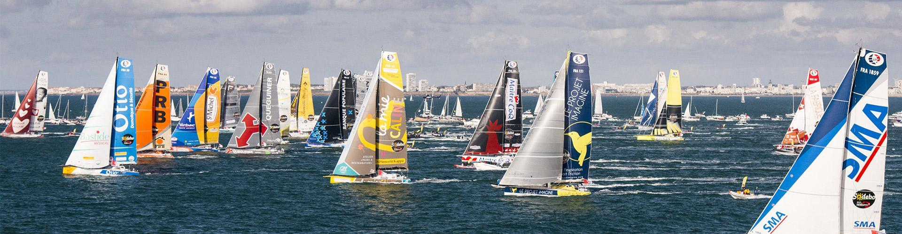
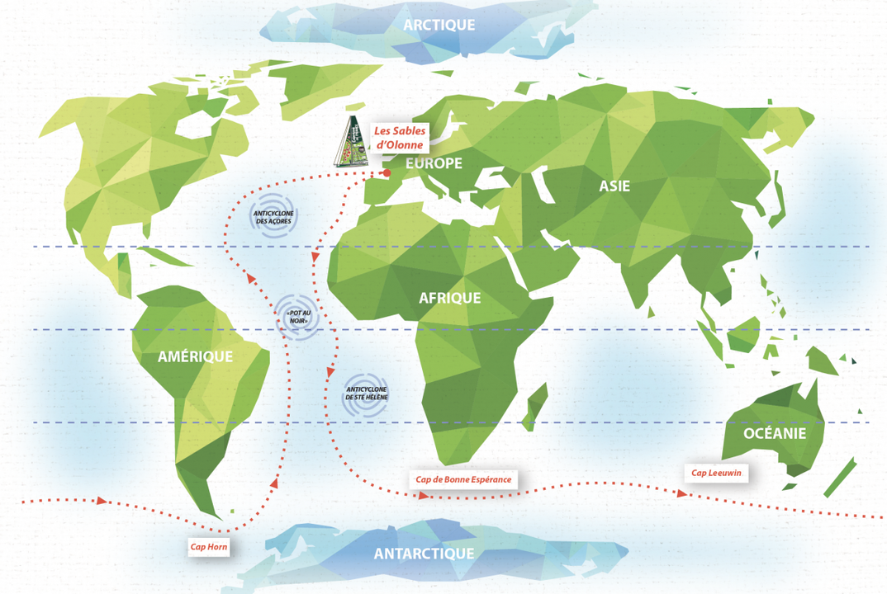
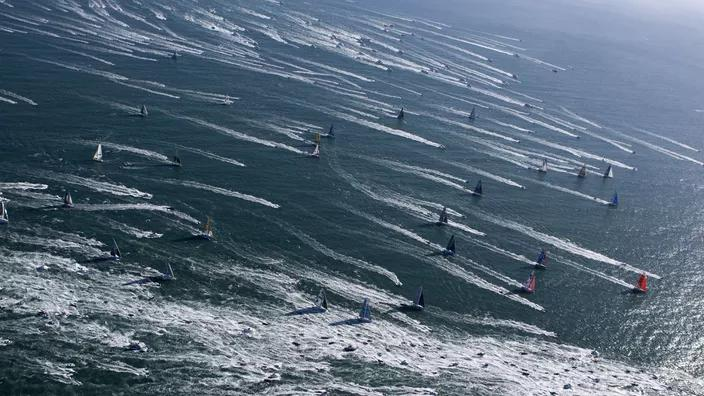
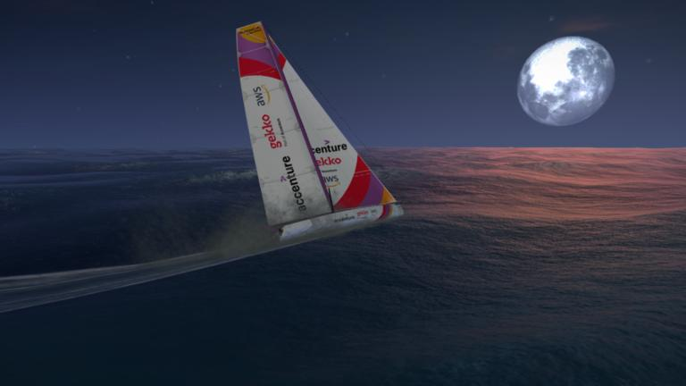

<article id="le_saviez_vous">
				<!-- LE SAVIEZ VOUS ? -->
				<div class="Edition">
					<div class="FullArticle">
						<hr style="background:content-box radial-gradient(#FFD517, #000000);">
						
						<hr style="background:content-box radial-gradient(#FFD517, #000000);">
						<h3>Vous vous coucherez moins bête ce soir, le saviez-vous ?</h3> <!-- Slogan de la rubrique -->
						<h2>Un le saviez-vous spéciale Vendée Globe !</h2>
						
						<br />
						<h4>Savez-vous comment se forme les vents ?</h4>
						<p>
							Le vent est l'arme ultime des skippers, réussir à allez récupérer les meilleurs vents est la clé pour gagner le
							Vendée Globe. Mais comment celui-ci se forme ?
							C'est le soleil qui est à l'origine des vents, puisque celui-ci ne chauffe pas uniformément la Terre, non seulement parce
							que c'est une sphère mais également parce que les corps chauffés ne sont pas de la même nature (continents, océans,
							nuages, ...). L'air chauffé se dilate et se met en mouvement. Il s'élève et exerce une force de pression sur l'atmosphère alentour.
							Le vent, n'est qu'une simple circulation d'air d'une zone de haute précion vers une zone de basse pression. En d'autres termes et en vulgarisant un peu, l'air va d'un anticyclone vers une dépression. 
						</p>
						<p>
							La force de Coriolis, qui résulte de la rotation de la Terre, fait que les vents ne sont donc pas uniquement sur des
							forces droites, mais bien en rotation. On peut noter que le sens de rotation des anticyclone n'est pas le même entre
							les deux hémisphères.
							L'air a un mouvement vers la droite dans l'hémisphère nord et vers la gauche dans l'hémisphère sud. C'est pourquoi
							les skippers s'éloignent des terres le plus rapidement possible au début pour ensuite longer le brésil et utiliser
							l'anticyclone de St Hélène pour glisser en direction du Cap de Bonne-Espérance ! Ça parait simple dit comme ça et pourtant !
						</p>
						<p>
							Le fait que le sens de rotation des vents soit inversé entre les 2 hémisphères induits également une zone de
							convergence,
							mieux connu sous le nom de <b>Pot-au-Noir</b>. Cette zone est une zone météorologique très instable. Les marins qui
							y passent peuvent s'y engluer dans des zones de calmes ou au contraire, y subir des tempêtes.
							Le Pot-au-Noir est formé par l'affrontement entre les alizés de l'hémisphère Nord, qui tournent dans le sens des aiguilles d'une montre et les alizés de l'hémisphère Sud, soufflant dans le sens inverse.
							Cette zone est le cauchemar des skippers, elle est très délicate à gérer !
						</p>
						
						<br />					
						<h4>Le saviez-vous, le départ du Vendée Globe est à 13h02 précisément ?</h4>
						<p>
							Bien que cette année le top départ a été un peu repoussé, car à 13h02 les conditions météos n'étaient pas propice
							à cause de la présence abondante du brouillard ; le départ du Vendée globe a généralement lieu à 13h02. Mais
							pourquoi pas 13 h vous demandez-vous ? L’explication est assez simple en fait.
						</p>
						<p>
							La course cherche a avoir le maximum d'audience chaque année, c'est non seulement pourquoi le départ est un
							dimanche, mais c'est également la raison de l'heure du départ.
							Le départ avait pour objectif d'être diffusé au journal télévisé, c'est pourquoi on laisse cette marge de 2 min afin
							de leur laisser le temps de mettre leur générique et de présenter les titres du jour avant de diffuser le départ.
						</p>
						
						<br />
						<h4>Sur le jeu Virtual Regatta, un bateau sors du lot, car il n'a pas de "skipper", le saviez-vous ?</h4>
						<p>
							Sur le jeu virtuel du Vendée Globe, de nombreux "skippers" en herbe s'affrontent afin de revenir aux Sable d'Olonne le premier !
							Cependant, peu de personne le sait, mais il existe un bateau uniquement contrôlé par une IA, Le premier bateau virtuel sans skipper : <b>RoBoat</b>
						</p>
						<p>
							RoBoat utilise un modèle combinant l’algorithmie pour le routage et le machine learning pour ses choix tactiques.
							C'est le Liquid Studio de l'entreprise informatique Accenture qui a constitué une équipe avec des ingénieurs
							d’Accenture, Gekko
							et Amazon Web Service afin de réaliser ce projet fou. Quelques mois avant le Vendée Globe, ce bateau et ses
							algorithmes ont pu être testés sur diverses courses et permettre ainsi de résoudre les quelques soucis techniques
							visibles.
							À l'heure actuelle, malgré un très bon départ, le bateau a eu du mal à négocier l'anticyclone des Açores et se
							retrouve loin derrière le peleton de tête à la 462 089e place sur presque 1 million de joueur, mais la course est loin d'être terminée
						</p>
						
						<br />
						<p class="link"> Sitographie :
							<a target="_blank" 
								href="https://www.ouest-france.fr/vendee-globe/vendee-globe-2020-pourquoi-un-depart-a-13-h-02-et-pas-13-h-7044093">
								Ouest France
							</a>, 
							<a target="_blank"
								href="https://www.gekko.fr/roboat/">
								RoBoat Gekko
							</a>, 
							<a target="_blank"
								href="https://www.virtualregatta.com/fr/offshore-jeu/">
								Virtual Regatta
							</a>, 
							<a target="_blank"
								href="https://www.youtube.com/watch?v=qg0A3kSzAno">
								Vidéo YouTube d'initiaves Coeur
							</a>, 
							<a target="_blank"
								href="https://www.futura-sciences.com/planete/questions-reponses/meteorologie-forme-vent-6214/">
								Futura Sciences
							</a>, 
							<a target="_blank"
								href="https://www.campagnedefrance.fr/objectif-vendee-globe">
								Campagne de France
							</a>
						</p>
						<div class="signature">-- Thomas Lépine</div>
					</div>
				</div>
			</article>